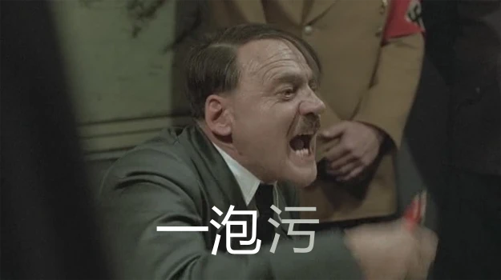

Lola rennt

基本信息
警告：
以下文字涉及剧情描述，不建议在观影前阅读。
仔细想想，好像还从来没有上过德国影片的。主要是因为自己也没看过几部，印象中就看过一部《帝国的毁灭》还有一部《柏林苍穹下》，巧了，主演还都是同一个人，都是演元首那个演员。我猜想是不是德国人民热衷于制造业，制造各种各样的工业品，下了班就喝喝啤酒，看看足球，对于文艺应该是没多大兴趣。隔壁的法国人倒是热衷于此。我随随便便就能数出一大堆品牌，卡尔蔡司的光学镜头、森海塞尔的耳机、西门子电器，欧司朗的光电、宝马奔驰的名车、英飞凌半导体等等。
万万没有想到的是，隔了这么多年以后，纳粹元首逃过了法庭审判，却没逃得过上海人的手心，他被上海人从土里刨出来，为推广上海闲话做出了巨大的贡献。
